Diario de partida 2 · el primer día, otra vez
La misma jugadora (ama a Ana, la ternura y el libro), con los arreglos de la partida 1. Desde la llegada a Tejas Verdes hasta la segunda noche, pasando por White Sands. Solo con la pantalla: toques, botones y el deslizador del tiempo. ← Partida 1
En resumen: los 8 errores y 7 cosas raras de la partida 1 están arreglados: hay introducción, el viaje a White Sands se lee entero, los cuadros no tapan los globos, la mesa tiene comida, la gente se sienta, Marilla llama a almorzar y nadie usa sombrero dentro de la casa. En esta partida encontré 17 cosas nuevas y las arreglé todas (abajo, en azul). Casi todas son de coherencia: alguien habla de algo que todavía no pasó, una acción que el texto cuenta pero no se ve, o una frase suelta que rompe un momento.
Lo de la partida 1, cómo quedó:
- Panel de IA al empezar → ya no aparece.
- Sin introducción → dos tarjetas con el contexto (los Cuthbert, la Sra. Spencer, el error).
- Cuadro de narración sobre el globo → los cuadros van arriba y los globos debajo.
- Sombrero sobre la mesa al llorar / Matthew con sombrero en la cocina → Ana se lo saca; los hombres no usan sombrero dentro de la casa.
- Cena sin comida / desayuno de pie → pan, mantequilla y jalea; tazones; todos sentados.
- La charla de las estrellas la noche triste → no hay charlas la primera noche.
- «El huerto de Diana» antes de conocerla → «el de los vecinos».
- El viaje a White Sands no se veía → tarjetas del libro y pasan las horas; el tiempo vuelve a 1× para leer.
- Globos bajo los botones → se corren a la izquierda.
- Menús sin título, armario difícil de tocar, lecciones antes de la escuela → títulos por cosa, zona del armario más grande, sin lecciones.
La partida
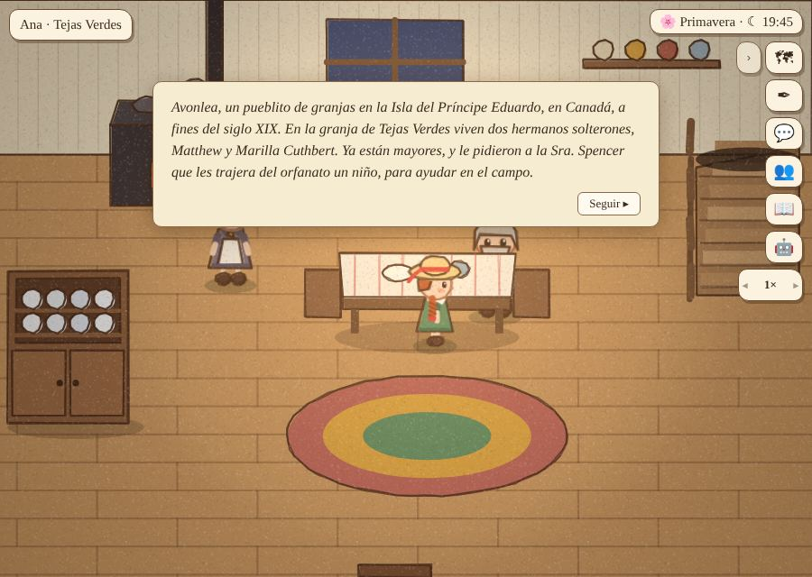
BienAhora sí, el contexto
La partida empieza con dos tarjetas, como en un libro: Avonlea, los hermanos Cuthbert, el niño que pidieron a la Sra. Spencer y la niña de pelo rojo que encontró Matthew. Ya no aparece el panel de IA. Entro sabiendo quién es quién.
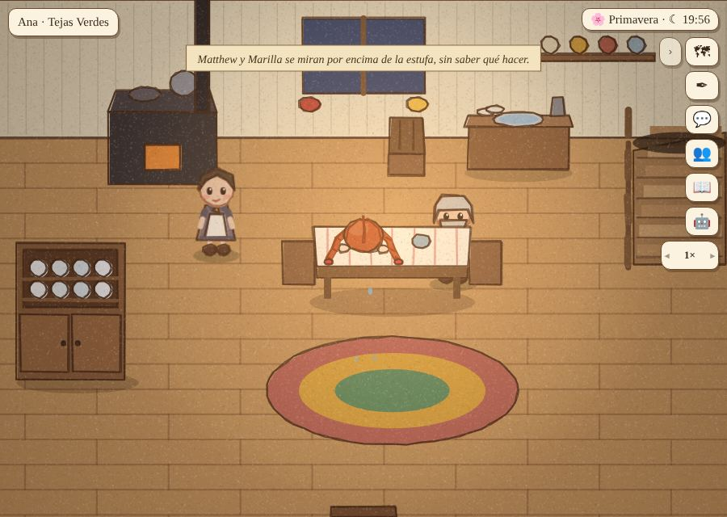
BienEl llanto, sin sombrero
Ana hunde la cara entre los brazos y llora; ahora se ve su pelo rojo, no el sombrero (se lo saca al dejarse caer). Matthew tampoco lleva sombrero dentro de la casa.
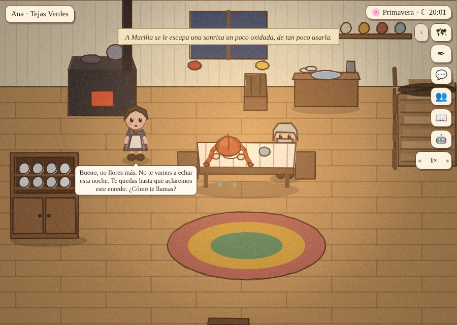
BienCuadro arriba, globo abajo
«A Marilla se le escapa una sonrisa un poco oxidada…» queda arriba, fijo, y el globo de Marilla se corre hacia abajo. Ya no se tapan. En la partida 1 se montaban.
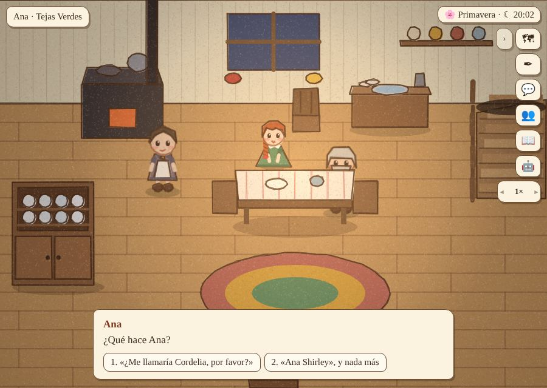
Bien¿Me llamaría Cordelia?
Elijo Cordelia, claro. El tiempo espera mientras decido.
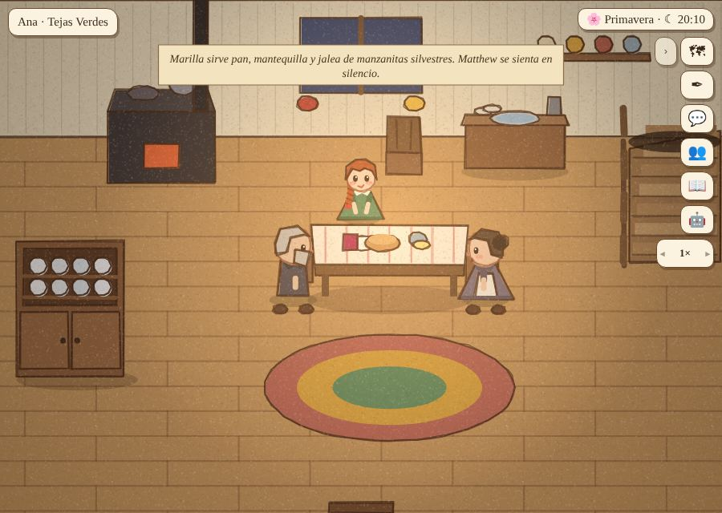
BienLa cena tiene comida
Pan, mantequilla y la jalea de manzanitas en la mesa, y Matthew y Marilla sentados. Ana elige «estoy en las profundidades de la desesperación»: el libro, palabra por palabra.
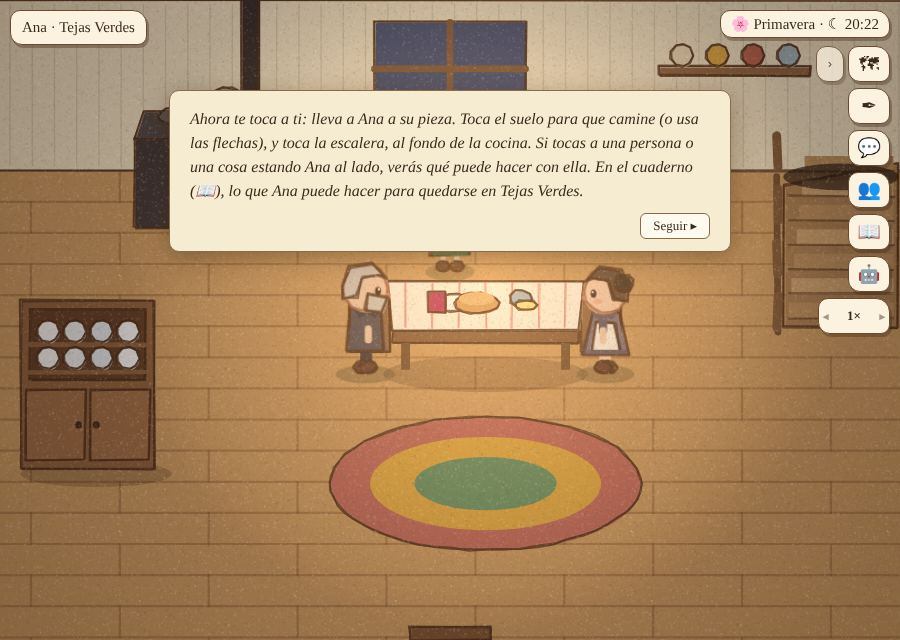
BienMe explican cómo se juega
Dos tarjetas: que elijo por Ana, que el tiempo espera, que Marilla todavía no la quiere y mañana la llevará a White Sands; y luego cómo caminar y tocar. Las instrucciones de las teclas ya no tapan la llegada: aparecen recién cuando me toca a mí.
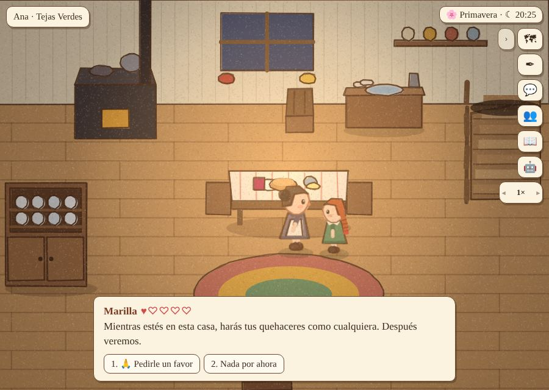
Visto y arregladoTocar a alguien que se mueve
Toqué a Marilla y ella siguió caminando: Ana llegaba a donde Marilla estaba y se quedaba ahí, mirando a la nada. Ahora Ana la sigue hasta alcanzarla y aparece su menú.
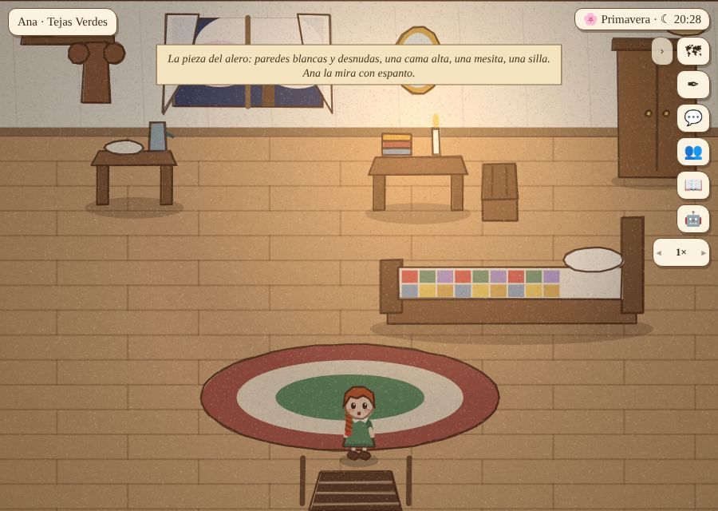
BienLa pieza del alero
«Paredes blancas y desnudas, una cama alta, una mesita, una silla. Ana la mira con espanto.» La cama ahora queda entera a la vista; antes se escondía detrás de los botones de la derecha.
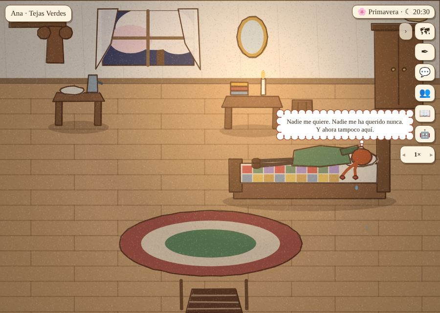
Visto y arregladoLa nube sale de su cabeza
«Nadie me quiere. Nadie me ha querido nunca. Y ahora tampoco aquí.» La nube del pensamiento salía al otro lado de la pieza, lejos de Ana tirada en la cama; ahora sale de la almohada.
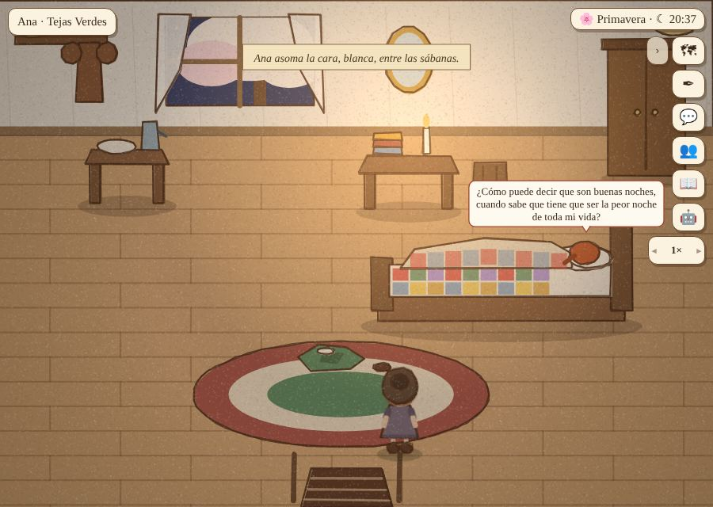
Bien«¿Cómo puede decir que son buenas noches?»
Marilla sube con la vela, mira la ropa tirada y no dice nada. Ana asoma la cara blanca entre las sábanas. Es la escena del libro, y duele como debe.
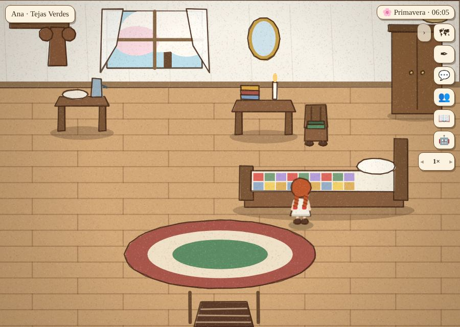
BienLa mañana
Ana despierta en camisón y la ropa está doblada en la silla: Marilla la dobló de noche, sin que yo lo viera. La vela, eso sí, seguía encendida de día (arreglado: ahora solo se enciende de noche).
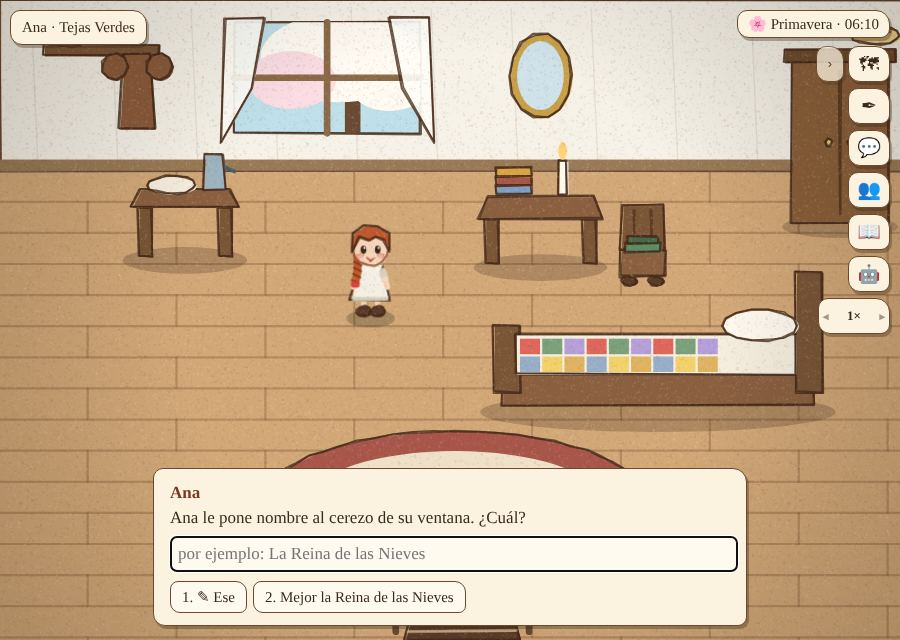
BienLe pongo nombre yo
En la ventana, Ana ve el cerezo en flor y me pregunta cómo llamarlo. Elijo «Otro nombre…» y aparece una cajita para escribir.
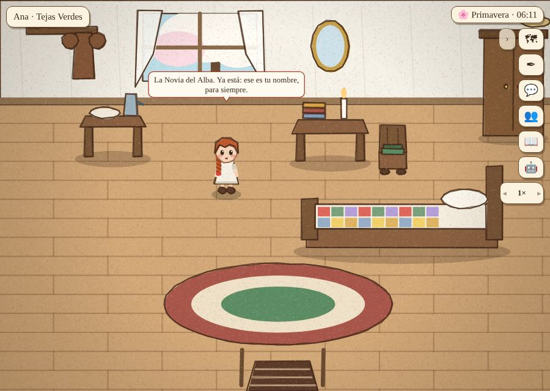
Bien«La Novia del Alba»
«Ya está: ese es tu nombre, para siempre.» Y es cierto: más tarde, en la cocina, Ana le cuenta a Matthew que el cerezo de su ventana es la Novia del Alba. Me emocionó que se acordara.
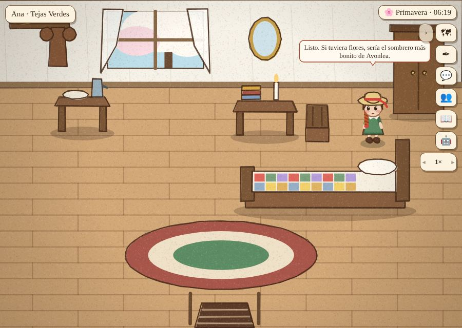
BienVestirse y el sombrero
El armario: primero el vestido, después el sombrero. El globo ya no se mete debajo de los botones. La silla queda en su sitio aunque esté vacía (antes desaparecía con la ropa).
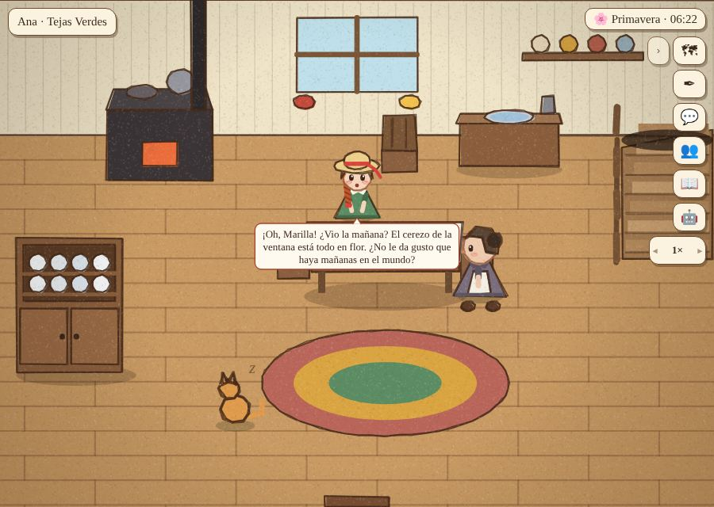
BienDesayuno sentadas
Ana y Marilla sentadas a la mesa, con dos tazones. «¿Vio la mañana?», y Marilla le habla de la ropa tirada, como en el libro. Una frase suelta de Marilla («¿Dijiste tus oraciones?») se montaba al comienzo de la escena; ya no: cuando empieza una escena importante, se callan las frases sueltas.
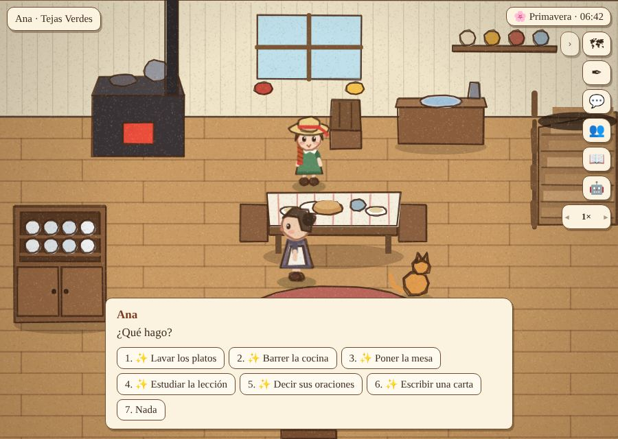
Visto y arreglado«Estudiar la lección», sin escuela
Al tocar a Ana aparecía «Estudiar la lección» el primer día, sin haber ido nunca a la escuela. Ya no: las lecciones aparecen cuando va a la escuela.
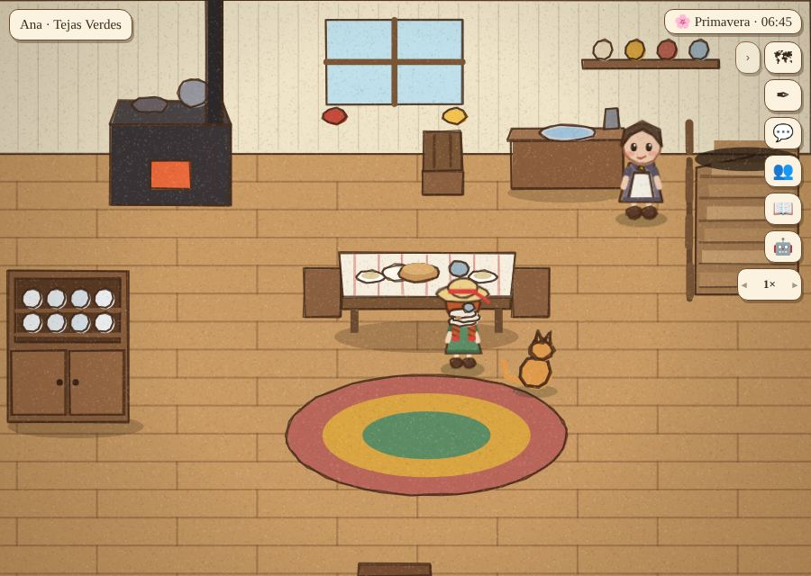
BienAna lava los platos
Lo elijo para ganarme a Marilla. Ana lleva los platos al fregadero y los lava. Marilla no dice nada (muy de ella), pero el cariño sube.
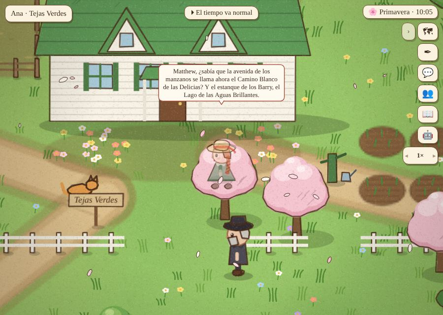
Visto y arregladoNombres que todavía no puso
Afuera, Ana le cuenta a Matthew que la avenida se llama «el Camino Blanco de las Delicias» y el estanque «el Lago de las Aguas Brillantes»… pero nunca pasó por ahí. Ahora esa charla pide que los haya nombrado. Lo mismo con las violetas «del arroyo» (ahora son de la orilla del camino) y otras charlas que se adelantaban: las mangas de las niñas de la escuela dominical, los vestidos que Marilla todavía no le hace, «por qué se quedaron conmigo».
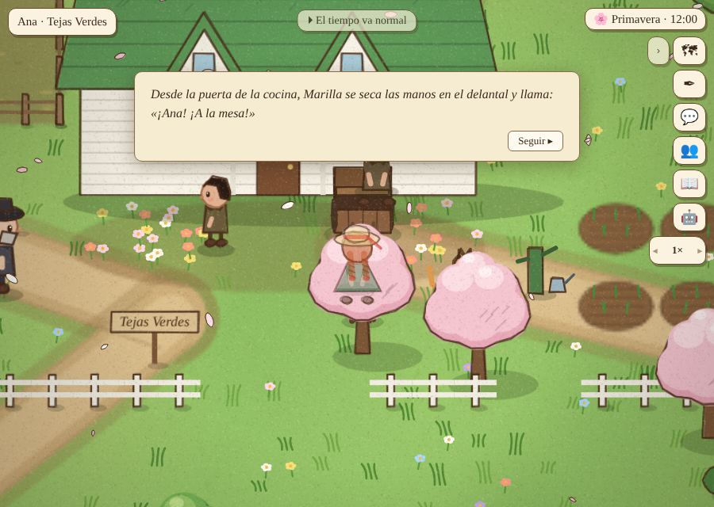
BienMarilla la llama a almorzar
Ana estaba en el patio, bajo los cerezos. A las 12, una tarjeta: Marilla se seca las manos en el delantal y llama «¡Ana! ¡A la mesa!». Y elijo: entrar o quedarse un ratito más.
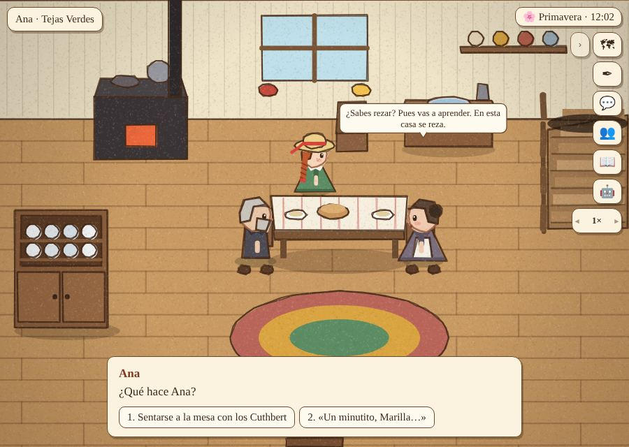
Visto y arregladoLa llamaban dos veces
Entré a almorzar y Marilla me volvió a llamar desde la cocina: «Ana, a la mesa». Ahora es un llamado por día.
BienLos tres a la mesa
Matthew lee el diario, Marilla sirve, Ana imagina que la mesa es un banquete en un castillo. Lo más tierno del día.
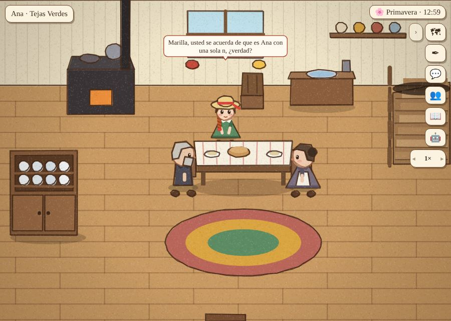
BienAna con una sola n
En la sobremesa, Ana se asegura de que Marilla se acuerde: «Ana con una sola n, ¿verdad?».
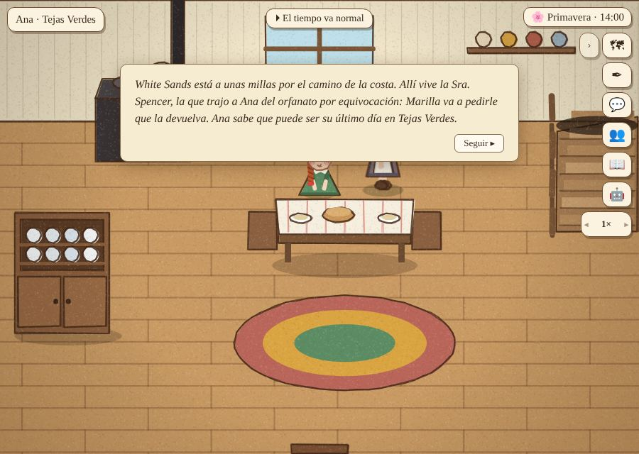
BienEl viaje a White Sands, por fin
A las 14:00 empieza el viaje, con tarjetas que se leen con calma: el camino de la costa, la vida de Ana (Bolingbroke, la Sra. Thomas, los mellizos de la Sra. Hammond)… En la partida 1 no se veía y pasaba volando. Si Ana anda en el patio o en su pieza, Marilla la va a buscar.
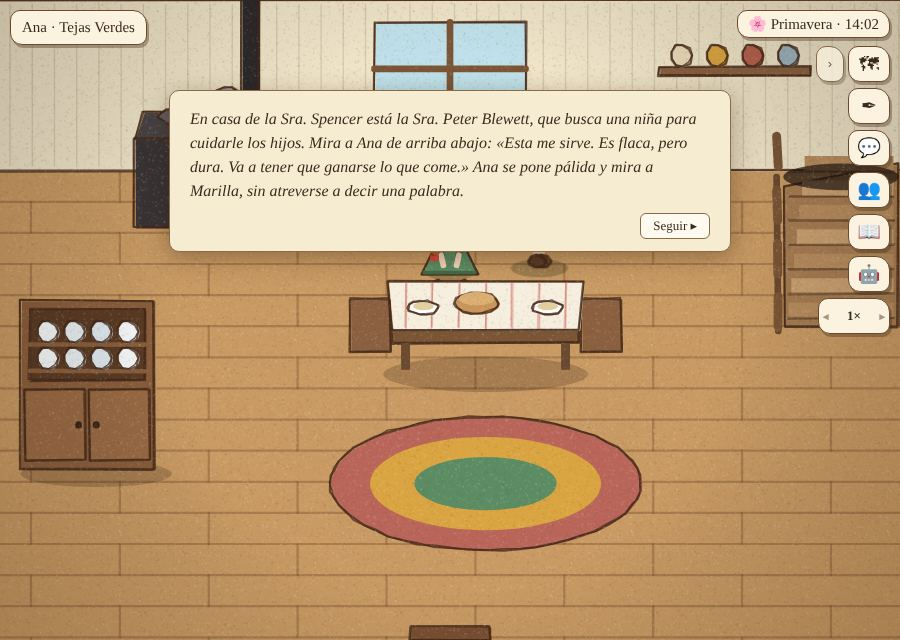
BienLa Sra. Blewett
«Esta me sirve. Es flaca, pero dura.» Ana se pone pálida y mira a Marilla. Lo leí con el corazón apretado. Pasan cuatro horas y vuelven ya de tarde.
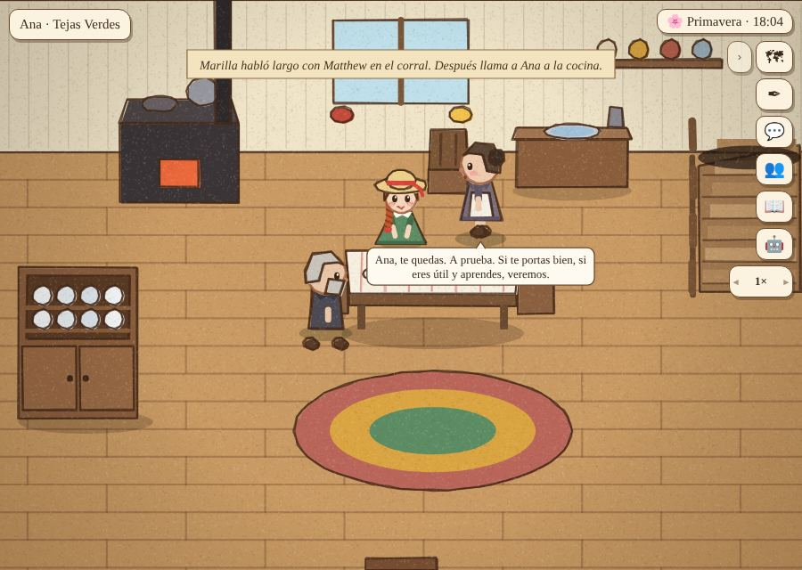
Bien«Ana, te quedas. A prueba.»
Marilla habló con Matthew en el corral y la llama a la cocina.
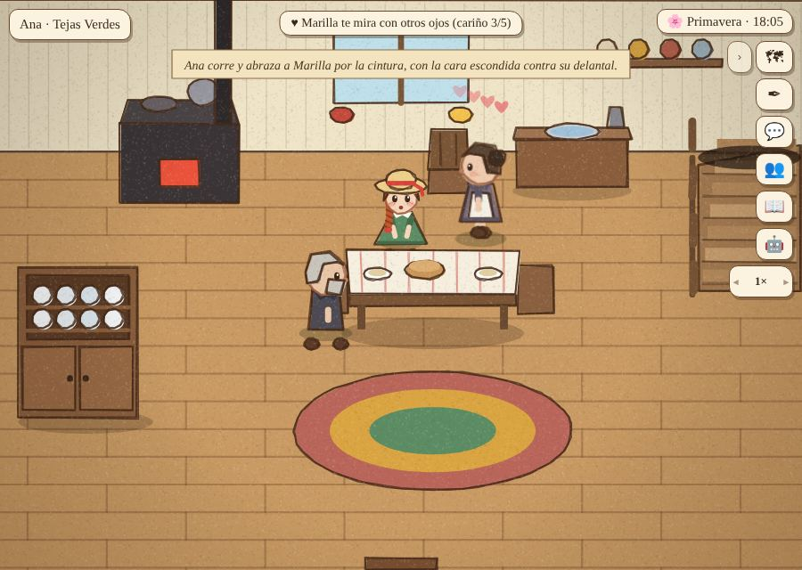
Visto y arregladoEl abrazo, desde la silla
Elijo «Abrazar a Marilla, sin decir nada»: el cuadro dice que Ana corre y la abraza por la cintura, pero Ana seguía sentada al otro lado de la mesa. Ahora va hasta Marilla.
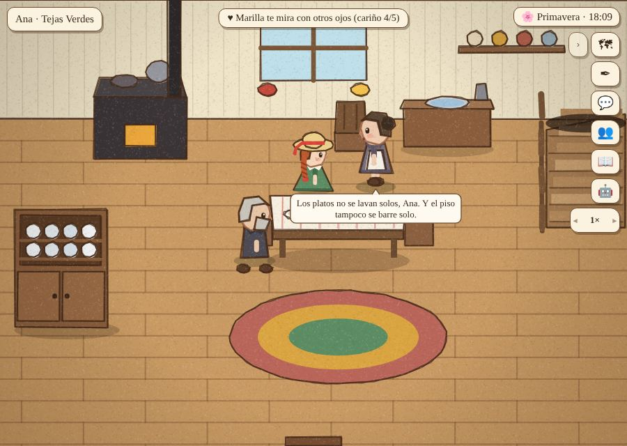
Visto y arregladoY justo después… los platos
Segundos después del abrazo, Marilla suelta «Los platos no se lavan solos, Ana». Rompía el momento. Ahora, después de una escena grande, nadie dice frases sueltas por un rato.
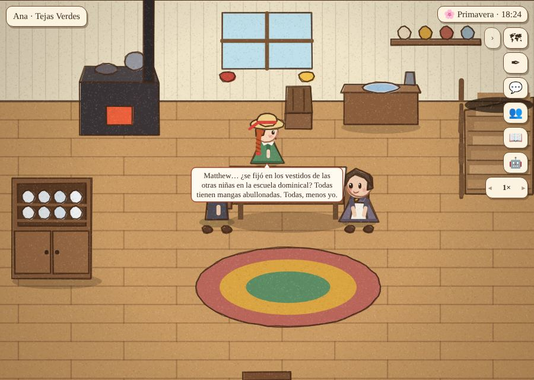
Visto y arregladoLas mangas abullonadas, antes de tiempo
En la cena, Ana le habla a Matthew de los vestidos de la escuela dominical, adonde todavía no ha ido. Ahora esa charla espera a que vaya.
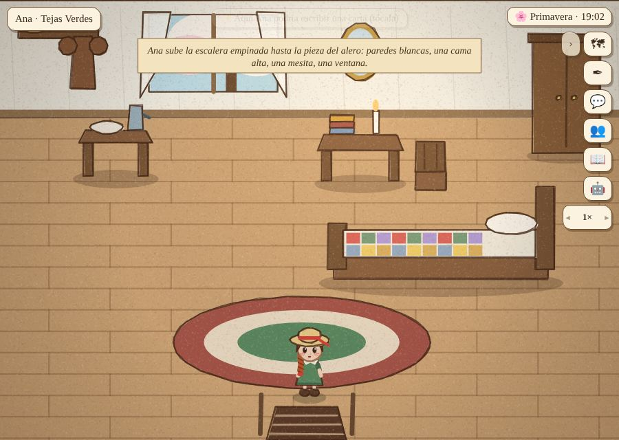
Visto y arregladoLa pieza «por primera vez», otra vez
Al subir a la noche, el cuadro describía la pieza como si fuera la primera vez, pero ya había dormido ahí. Ahora dice que, con la luz del día, las paredes blancas ya no le parecen tan tristes como anoche.
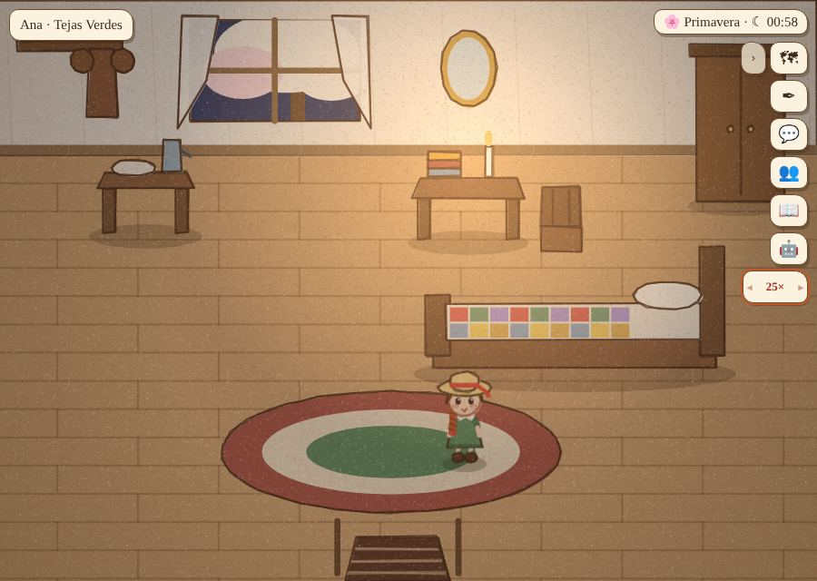
Visto y arregladoNadie la mandó a dormir
Con el tiempo rápido, Ana se quedó de pie en su pieza hasta las dos de la mañana y se durmió vestida, sin la elección de doblar la ropa. Ahora, a las 21, Marilla la manda a la cama («Mañana hay que madrugar») y Ana sube y elige si dobla la ropa.
Otras cosas que vi y arreglé (sin foto)
- Al volver a abrir el juego, la primera noche se repetía: las escenas ya dichas no se guardaban. Ana volvía a tirarse en la cama, a dormir, y se saltaba un día. Ahora se guardan (y también lo que hay en la mesa).
- Matthew, de noche, después del llanto: «Las vacas andan contentas hoy. Será por el sol». La primera noche ya no hay frases sueltas: solo lo del libro.
- Sugerencias de tareas al llegar («Aquí Ana podría lavar los platos…») la primera noche: ya no aparecen hasta la mañana.
- El deslizador del tiempo volvía a 1× con cualquier charla: ahora solo con escenas importantes (las que interrumpen, las grandes, las que traen tarjeta o piden elegir).
- Si Ana estaba en el patio a las 14:00, el viaje a White Sands no empezaba nunca (pedía que estuviera en la cocina). Ahora Marilla la va a buscar.
- El desayuno quedaba servido todo el día: se levanta la mesa al terminar.
Lo que queda (ideas, no errores)
- Ana se deja el sombrero puesto dentro de la casa si no se lo saco yo. Es mi decisión, pero Marilla podría decirle algo.
- Toby, la gata, se sube a la mesa durante el desayuno. Gracioso, pero Marilla no lo permitiría.
- Los cerezos del patio no tienen escena al tocarlos; con lo inspiradoras que son las de la ventana, aquí también cabría una.
- Cuando Ana lava los platos sin que se lo pidan, Marilla no reacciona. Es muy de ella, pero una mirada de reojo («Hmm.») le daría gusto a la jugadora.